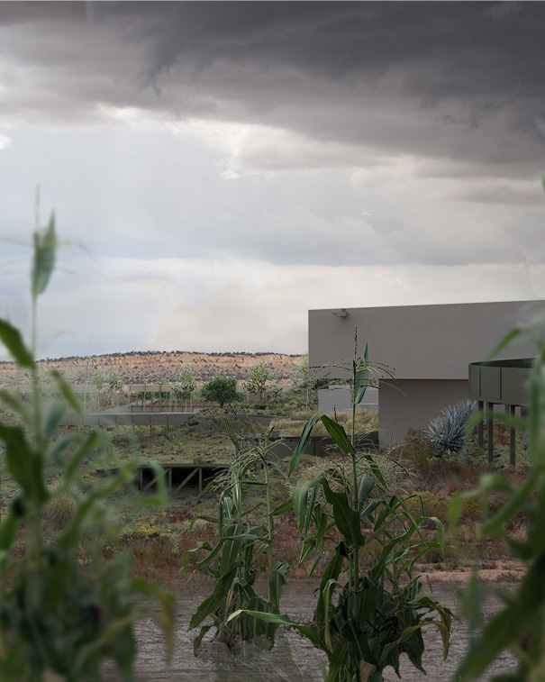

The project connects education, food, and landscape through a choreographed walking path, which is open to the public.
Main Street Grounds
Advanced Studio "Restorative Practice," Critics: Alan Ricks, Caitlin Taylor
Fall 2021
In collaboration with Brian Orser
Main Street Grounds is a school and a public place embedded in a landscape that tells a story about the economic past and future of Farmington, New Mexico, through the medium of land. The project’s transformative landscape and architecture, through aperture and excavation, aims to facilitate a new way of seeing the land and the future of life in the San Juan Basin as it transitions from an extractive oil/gas economy to a diversified one.
The nature-based preschool occupies the lower level; vertical connections to the upper level bring light and intergenerational connectivity.
The sheer concrete and stone face of the building and the voids between the modules express excavation. Sometimes the visitor inhabits moments of excavation along the walking path.
The path transforms in section as it weaves through the landscape and across the building.
Level 2 plan; the school offers adult education (shown at level 2 plan) and a nature-based preschool (at level 1). Adult education can reskill workers for the changing economy of the San Juan Basin, meeting diversification head-on.
This partial section shows the excavation room, where visitors inhabit a section through the surrounding earth.

The project also works to generate new understandings of the land through agriculture. Here in a demonstration garden, corn grows in a field irrigated only by flooding with rainwater, as has been practiced for generations by the Zuni. To see the land produce something out of apparent scarcity has the power to change the perceptions of both the adults and the children who visit and learn here.
View through horizontal aperture at the viewing gallery, showing the mountains beyond. Below, view through vertical aperture, revealing the connection between city, mountains, and sky.
By bringing this broad public together, we hope to reframe how the landscape is seen. Seeing is important because how we read the landscape has a direct impact on how we treat the land, on how we use it, and how we live within it. Different publics read the land differently. By reframing ways of seeing the landscape, points of view may be loosened and new synthetic views may emerge.
With its schools, farmer’s market, and educational landscape, Main Street Grounds is rooted in intergenerational exchange, creating the common ground needed for Farmington to transition to a diversified economy and secure a prosperous future.